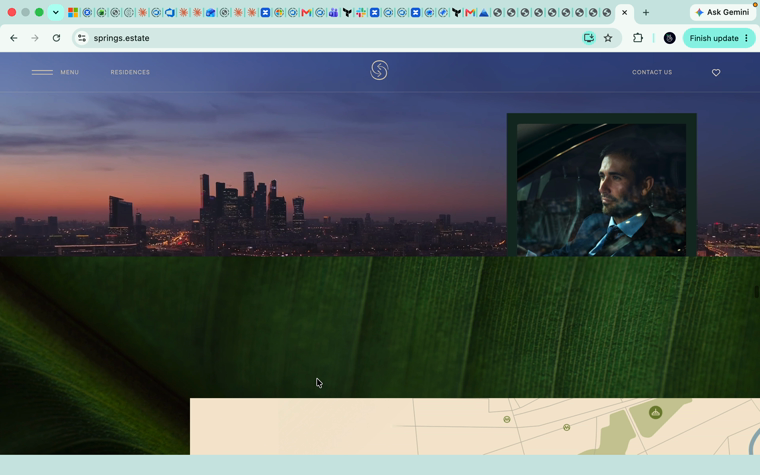
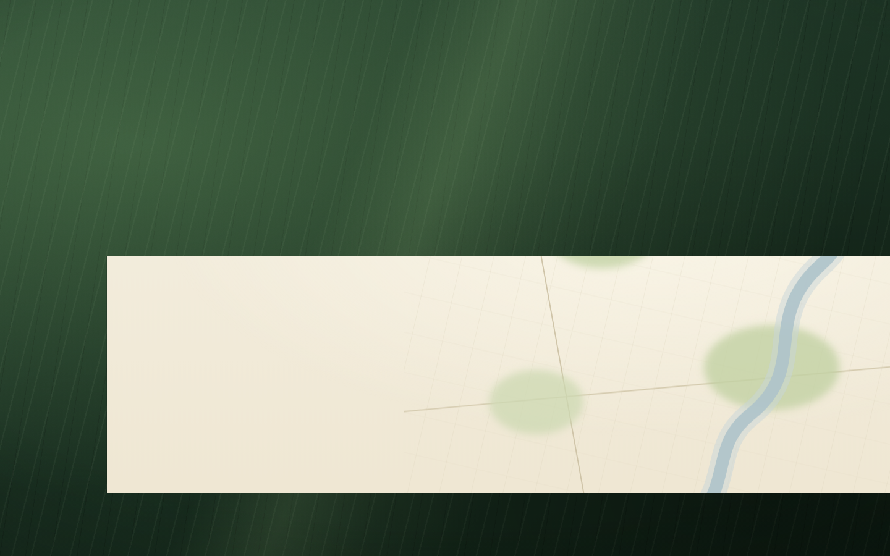
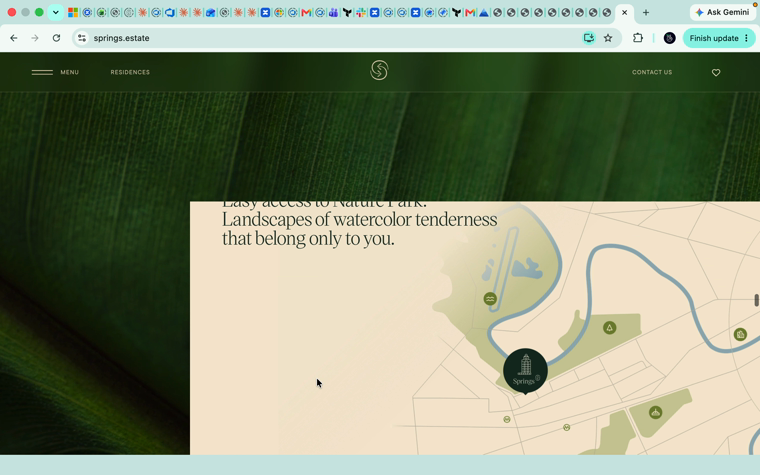
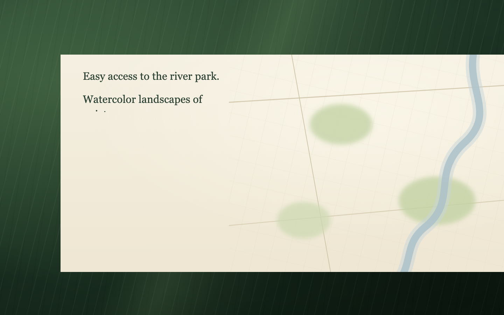
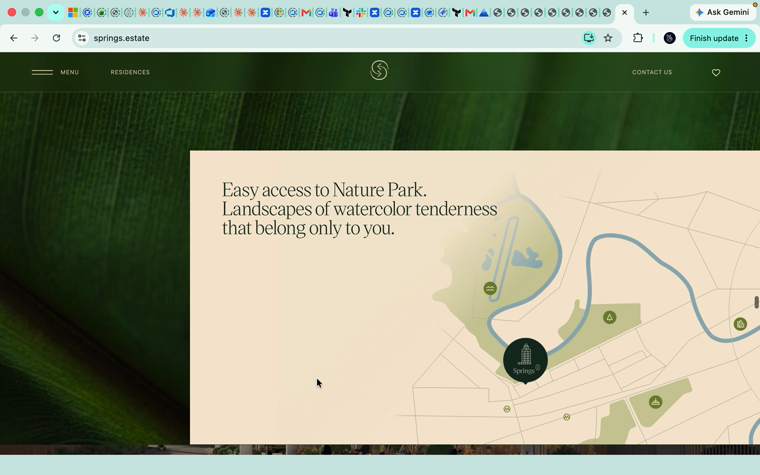
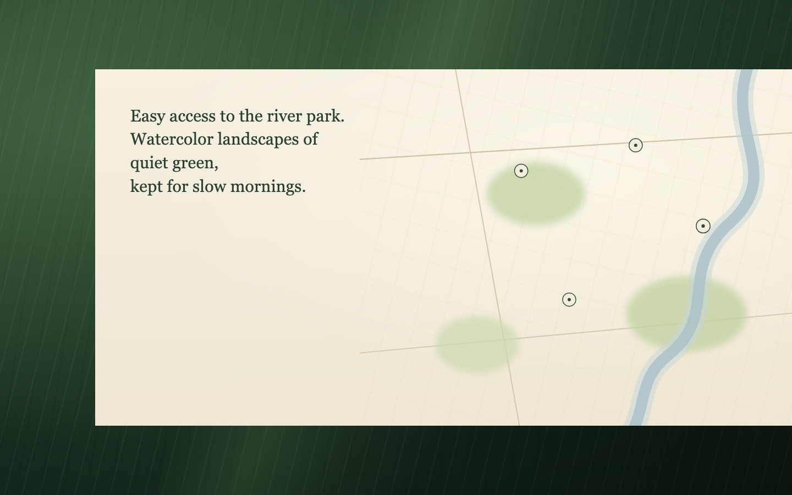
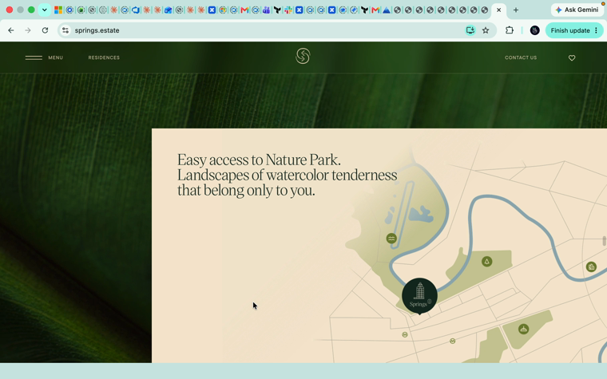
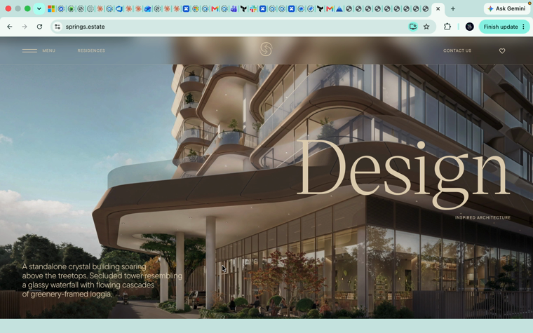
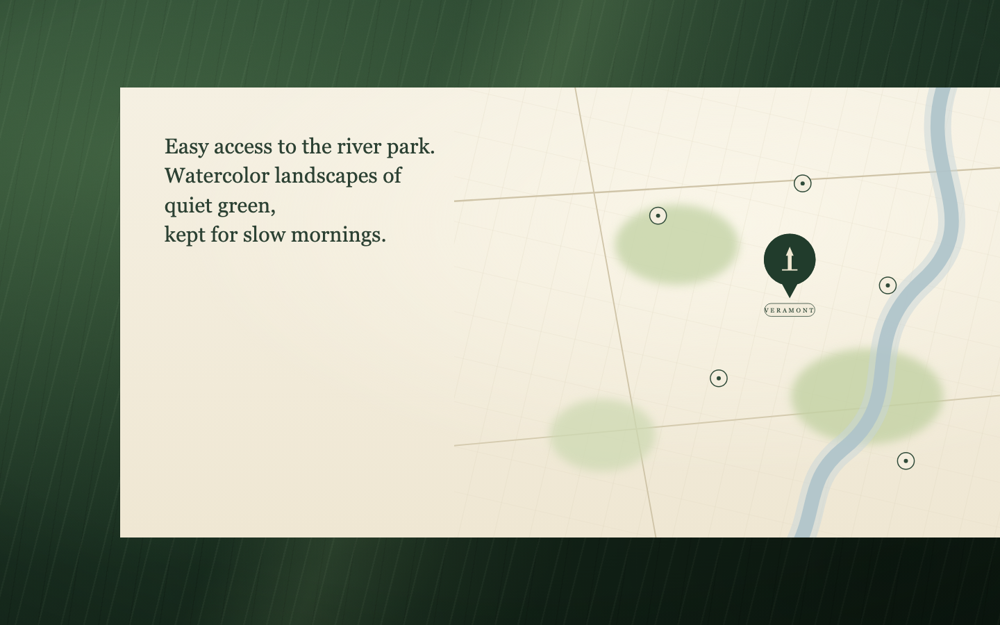
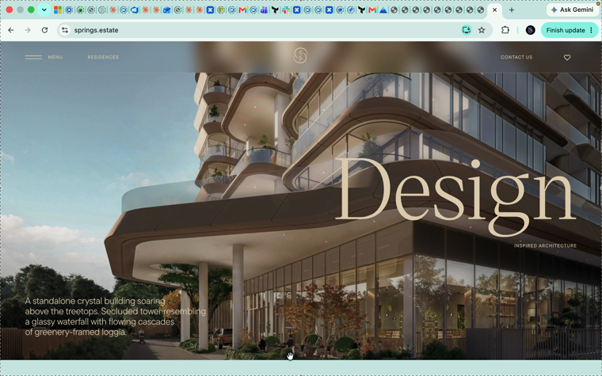

No text collision. Composition/tempo 1-в-1 must still be CONFIRMED BY EYE against the live board.
| phase | OURS | LIVE (springs) | text-collision |
|---|---|---|---|
| p=0.1 |  |
ok | |
| p=0.35 |  |
 |
ok |
| p=0.45 |  |
 |
ok |
| p=0.55 |  |
 |
ok |
| p=0.7 |  |
ok | |
| p=0.9 |  |
 |
ok |